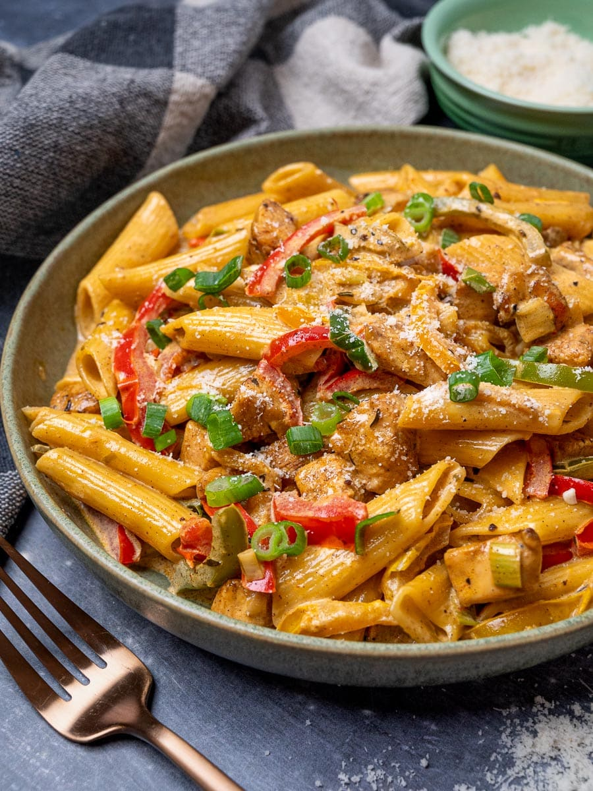
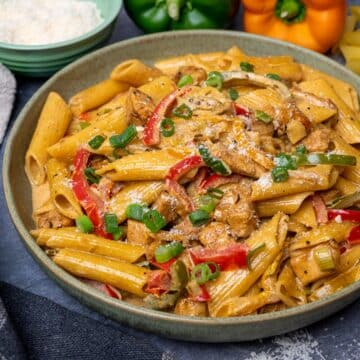
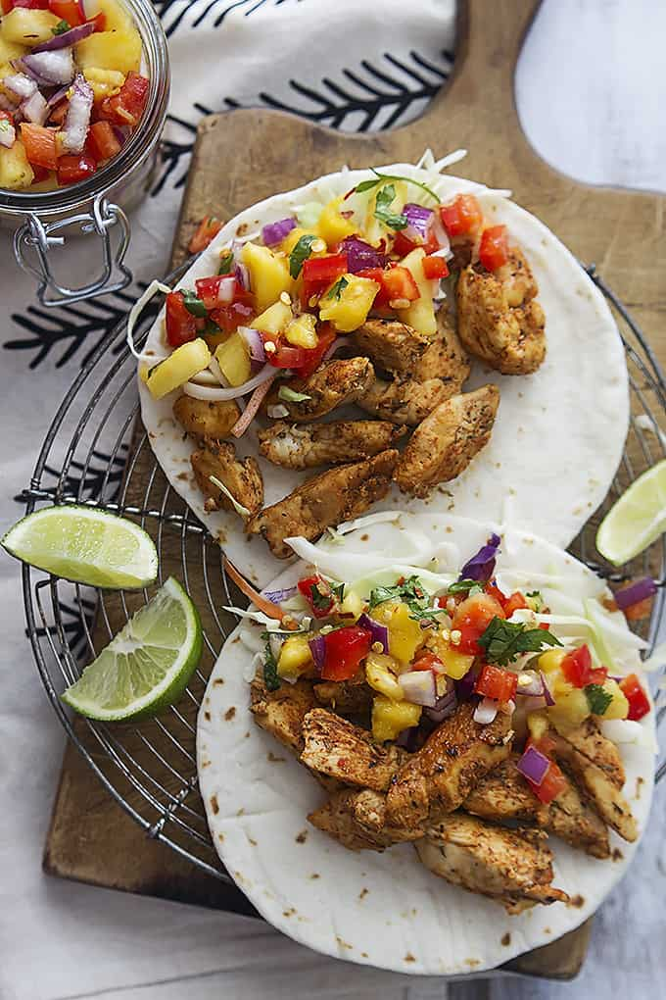
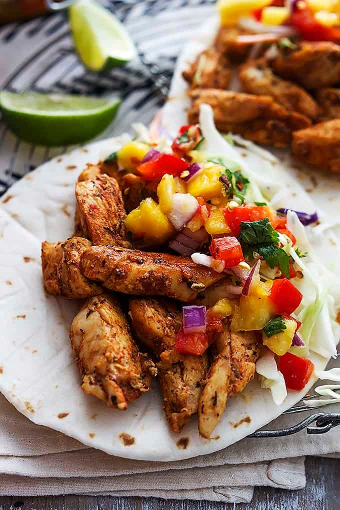
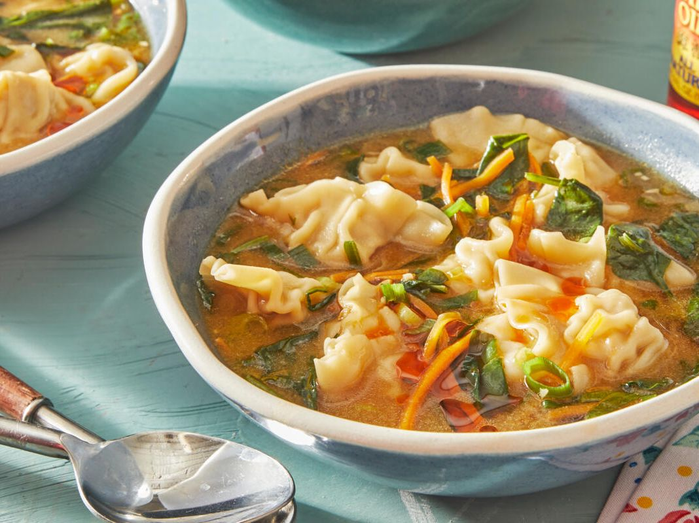
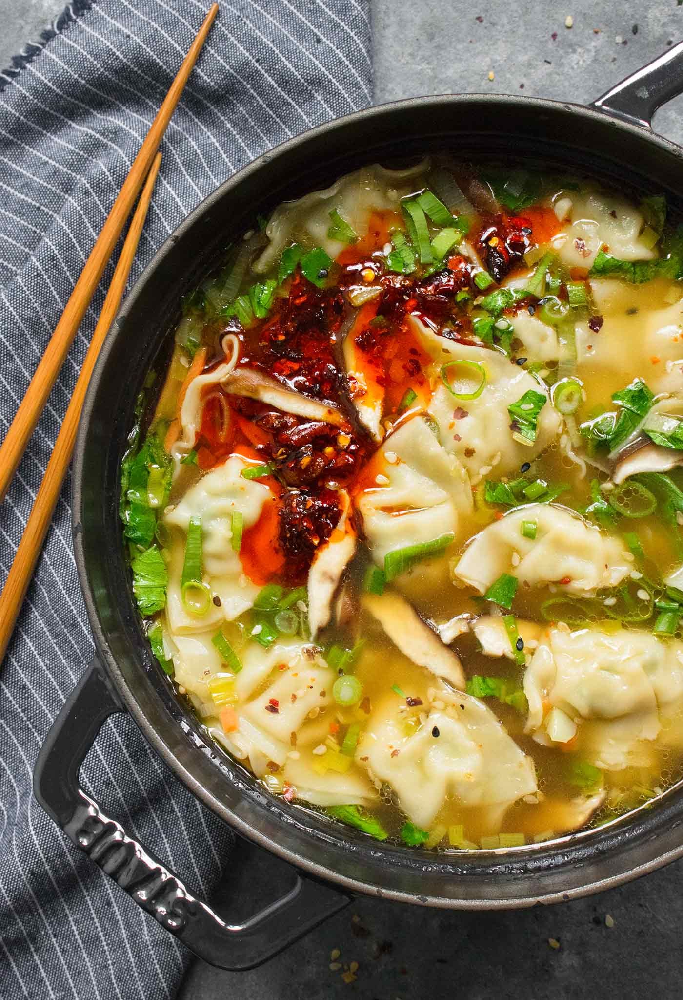

Comfort Food Cookbook
Angelina Sookdeo
Creamy Rasta Pasta

Prep Time:10 Minutes
Cook Time:20 Minutes
Total Time:30 Minutes
Calories:600
This creamy Rasta Pasta recipe is just the perfect weeknight dinner
treat. It's comforting, just a bit spicy and ready in just 30
minutes. Prepare to be amazed by the flavors and creaminess of this
jerk chicken pasta! Rasta pasta is one of those incredibly creamy
and comforting pasta recipes that you'll find yourself making again
and again.
Jump to Recipe
EQUIPMENT NEEEDED
- Staub Chistera Black Cast Iron
- Chef's Knife
- Mixing Bowls
Creamy Rasta Pasta Recipe

Print Recipe
Save Recipe
A simple, delicious flavorful pasta dish! Ready in 30 minutes!
Ingredients
- 1 lb (450 g) pasta
- 1 lb (450 g) chicken breast, diced
- 3 tablespoons of jerk seasoning (hot & spicy), divided
- 2 tablespoons of olive oil, divided
- 1 tablespoon (20 g) of unsalted butter
- 1 red bell pepper
- 1 green bell pepper
- 1 yellow bell pepper
- 3 garlic cloves, minced
- 4 spring onions, chopped
- 1 cup (250 ml) chicken stock
- 1 cup (250 ml) heavy cream
- 1 cup (100 g) parmesan, grated
- Fresh parsley, to garnish, optional
Instructions
-
Place the chicken pieces in a large bowl and toss them in two
tablespoons of jerk seasoning.
-
Bring a large pot of water to a boil, salt it generously, and
cook the pasta al dente according to the instructions on the
package. Reserve 1-2 cups of pasta water before draining.
-
Meanwhile, heat 1 tablespoon olive oil in a deep pan or shallow
cast-iron casserole and then melt the butter in it.
-
Add the chicken cubes to the pan and cook for 5-6 minutes until
cooked through. Remove the chicken from the pan and set it
aside.
-
Add the remaining olive oil to the pan and saute the peppers for
2-3 minutes or until they soften to your likening.
-
Next, add the garlic and cook for another minute until fragrant.
-
Stir in the chicken stock and double cream and cook until it
starts to thicken.
-
Add the chicken back to the pan and then the cooked pasta. Toss
it well until coated in sauce, adding a dash of pasta water if
it looks too thick.
-
Stir in the parmesan and serve immediately, garnished with fresh
parsley and freshly sliced spring onions if you like.
Tip:I used fresh penne for this Rasta pasta recipe, but you can
use any other type of short pasta you like, such as fusilli,
rigatoni, or farfalle.
Caribean Chicken Tacos

Prep Time:15 Minutes
Cook Time:10 Minutes
Total Time:25 Minutes
Calories:183
Incredibly tasty Caribbean Chicken Tacos topped with a
quick and easy Caribbean salsa featuring mango, pineapple, red
onions, and cilantro! The flavors can't be beat and the whole meal
is ready in less than 30 minutes!
Jump to Recipe
Caribbean Chicken Tacos

Print Recipe
Save Recipe
A quick, easy, totally delicious meal! The whole meal ready in less
than 30 minutes!
Ingredients
-
3-4 boneless skinless chicken breasts - pounded to ½ inch
thickness
- 1 ½ tablespoons Caribbean seasoning
- 8 taco-sized soft flour tortillas
- 2 cups cole slaw (without dressing)
Caribbean Salsa
- ½ red bell pepper, diced
- ½ small red onion, chopped
- 1 mango, diced
- 1 cup pineapple, diced
- ¼ cup cilantro, roughly chopped
- 1 tablespoon fresh lime juice (about ½ of a juicy lime)
- ½ teaspoon salt
- ½ teaspoon garlic powder
Instructions
-
Prepare the salsa by combining all ingredients in a bowl and
stirring well. Cover and chill until ready to use.
-
Slice chicken breasts into strips
(or chop into bite-sized pieces) and place in a bowl. Sprinkle
chicken with half of the Caribbean seasoning, stir, then
sprinkle with remaining seasoning and toss to coat.
-
Cook chicken in a large greased pan or skillet over medium heat
for 5-8 minutes until cooked through.
-
To serve, fill each tortilla with cooked chicken, then top with
cole slaw and Caribbean salsa. Serve immediately with fresh
limes for drizzling if desired.
Notes: Homemade Caribbean Seasoning: 2 teaspoons paprika, 2
teaspoons cayenne pepper, 2 teaspoons salt, 2 teaspoons black
pepper, 2 teaspoons Italian seasoning, 1 teaspoon brown sugar,
1/2 teaspoon red pepper flakes.
Stir together all seasoning ingredients in a small bowl.
Dumpling Soup

Prep Time:5 Minutes
Cook Time:10 Minutes
Total Time:15 Minutes
Yields:2 qt.
An ideal family meal that beats takeout any night of the week, the
tender dumplings floating in creamy miso broth are totally
kid-friendly. Of course, a dab of hot sauce or chili oil kicks it
up a notch for everybody else.
Jump to Recipe
Dumpling Soup

Print Recipe
Save Recipe
A filling, comforting, soul-enriching meal that is on the table in
under 20 minutes!
Ingredients
- 1 Tbsp. vegetable oil
- 2 tsp. sesame oil
- 1 c. shredded carrots
- 5 green onions, thinly sliced, whites and greens separated
- 3 garlic cloves. finely chopped
- 1/4 tsp. ground ginger
- 1/4 c. white miso paste
- 6 c. chicken or vegetable broth, divided
- 1 lb. frozen mini dumplings
- 3 c. baby spinach
- 3 Tbsp. soy sauce, plus more to serve
Hot sauce or chili oil, to serve.
Instructions
-
In a large pot, heat the vegetable oil and sesame oil over
medium heat. Add the carrots, green onion whites, garlic, and
ginger. Cook, stirring frequently, until the vegetables begin
to soften, 2 to 3 minutes.
-
In a small bowl, combine the miso paste with ½ cup broth,
whisking until the miso paste is dissolved. Add the miso
mixture and the rest of the broth to the pot and bring to a
boil. Add the dumplings and bring to a simmer. Heat until the
dumplings are heated through, 3 to 5 minutes. Stir in the
spinach, cooking until the greens are wilted, 1 to 2 minutes.
-
Add the soy sauce and green onion greens. Serve hot with hot
sauce or chili oil, and extra soy sauce.
Tip: This recipe was developed with chicken and vegetable
dumplings,but would be fabulous with anything available in
stored, such aspork, tofu, or mixed veggies!